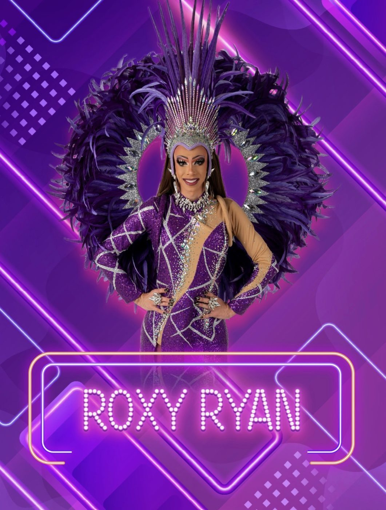
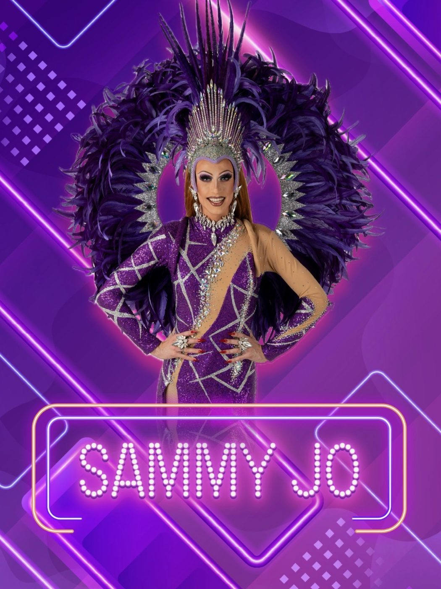
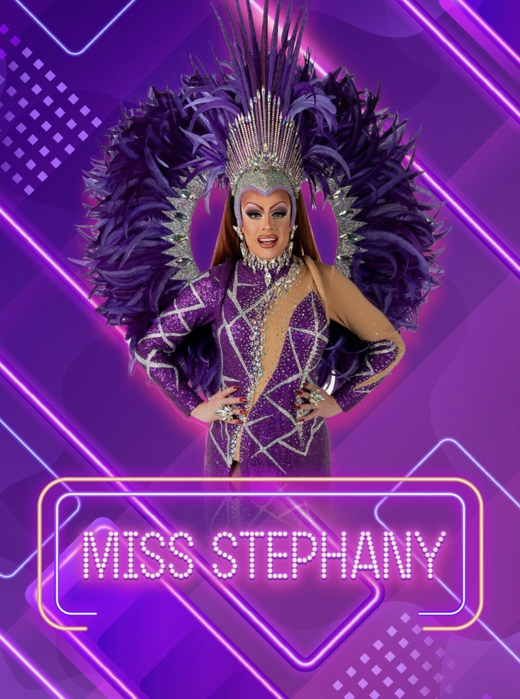
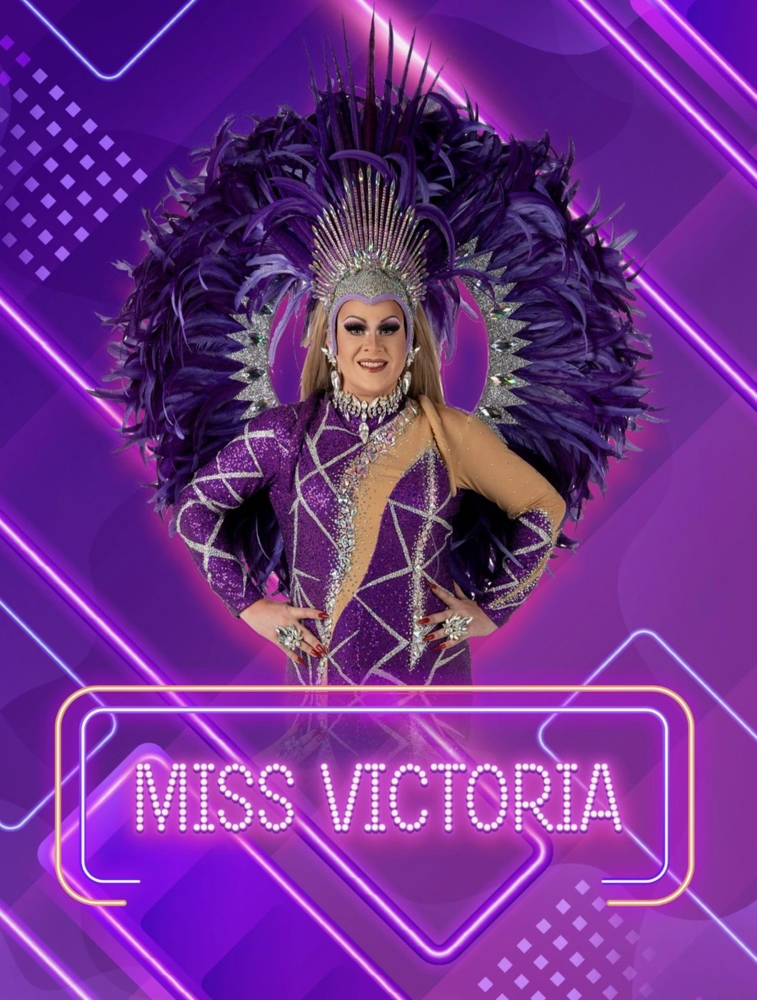
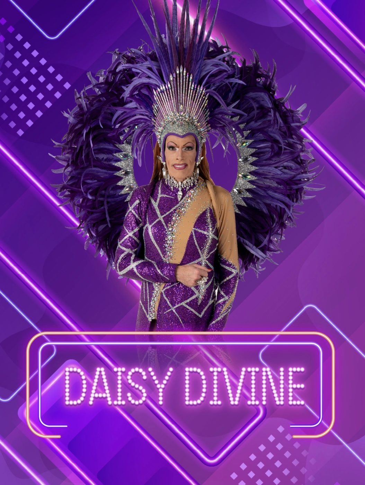

The Supermodels
The Supermodels is een showgroep uit Laakdal die al jaren shows brengt vol glitter, glamour, muziek en humor.
Vijf artiesten brengen samen één show, met grote kostuums, bekende muziek, humor en een paar verrassende acts.
De kracht van de groep zit in de combinatie van vijf verschillende artiesten. Miss Stephany, Sammy Jo, Daisy Divine, Miss Victoria en Roxy Ryan hebben elk hun eigen uitstraling, stijl en persoonlijkheid. Daardoor wisselen elegantie, spektakel en humor elkaar af.

Roxy Ryan
Roxy Ryan maakt het vijftal compleet. Ze is ondertussen al meer dan 15 jaar actief in het wereldje en bouwde in die tijd een mooi palmares op, met onder meer de titel 2de Ere Dame Miss Travestie Antwerpen (2019) en een knappe 2de plaats als Eerste Eredame op Miss Travestie België (2023).
Roxy weet glamour en humor te combineren en voelt zich duidelijk thuis op het podium. Ze voelt perfect aan wanneer het publiek nood heeft aan een rustig, sfeervol moment, en wanneer het tijd is om helemaal los te gaan. Die combinatie van klasse, elegantie en ambiance maakt haar een sterke aanvulling op de groep.
Ook achter de schermen is Roxy geen onbekende: ze strast er kostuums, niet enkel de hare, maar ook die van andere artiesten uit de scene.
Meer over Roxy →Sammy Jo
Sammy Jo is de leading lady van The Supermodels.
In 2022 werd Sammy Jo gekroond tot Miss Travestie België. Ook buiten het podium wist ze haar talent en persoonlijkheid te tonen, onder meer als jurylid in het televisieprogramma Make Up Your Mind.
Als leading lady leidt ze de show en neemt ze het publiek mee doorheen de avond.


Miss Stephany
Miss Stephany is een ervaren en gevestigde naam binnen de Belgische drag- en travestiewereld. In 2017 werd ze gekroond tot Miss Travestie België en in 2020 volgde de titel Miss der Missen. In 2023-2024 mocht ze zich bovendien Queen of the North noemen. In Chicago behaalde ze de vierde plaats op wereldniveau.
Stephany heeft jarenlange podiumervaring en combineert glamour met een flinke dosis humor.
Miss Victoria
Miss Victoria is een van de vijf dames die samen het huidige gezicht van The Supermodels vormen.
Victoria is een echte ambiance queen en heeft heel wat Nederlandstalige meezingers in haar repertoire, waarmee ze het publiek vlot meekrijgt.
Achter de schermen werkt Victoria bovendien samen met Roxy Ryan aan de kostuums van The Supermodels. Samen zetten ze de stenen op de kostuums.


Daisy Divine
Daisy Divine is niet alleen een vertrouwd gezicht binnen The Supermodels, ze is ook de oprichtster van de groep. Ze bepaalde jarenlang mee hoe de show eruitziet.
Jarenlang nam Daisy de rol van leading lady op zich. In 2025 gaf ze de fakkel van leading lady door aan Sammy Jo, maar ze staat nog altijd mee op het podium.
Familie op en naast het podium
Bij The Supermodels zit het ook in de familie. Miss Stephany en Sammy Jo zijn in het dagelijkse leven broers en ook Daisy Divine en Miss Stephany zijn al meer dan 10 jaar met elkaar getrouwd.
Naast collega's zijn ze dus ook familie en vrienden, en dat merk je aan de sfeer in de groep.
Iedere Supermodel heeft haar eigen stijl. Na een elegante act volgt al snel een grappige of een spectaculaire, zodat de show blijft verrassen.
Zin in een avond vol muziek, glitter en humor? In de agenda zie je waar The Supermodels binnenkort optreden.
Vijf dames, één show.
Bekijk de agenda →